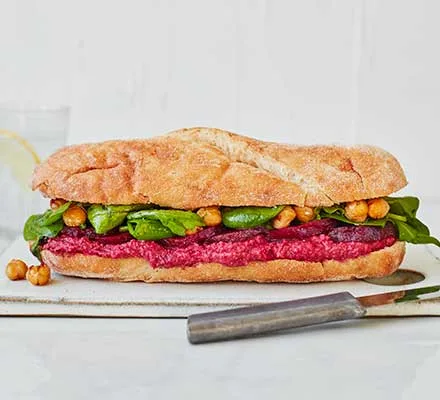

Beetroot, hummus & crispy chickpea sub sandwich

Description
Load up a sub with homemade hummus, beetroot, chickpeas and salad to make this filling vegan sandwich.
An ideal lunch for when hunger strikes.
Ingredients
- 300g pack cooked beetroot in water, drained, half sliced
- 400g can chickpeas , drained
- 3 tbsp vegan pesto
- olive oil/li>
- splash of vinegar (white wine vinegar if you have it)
- 2 large ciabatta rolls, sliced in half
- 2 large handfuls mixed rocket, watercress & spinach salad